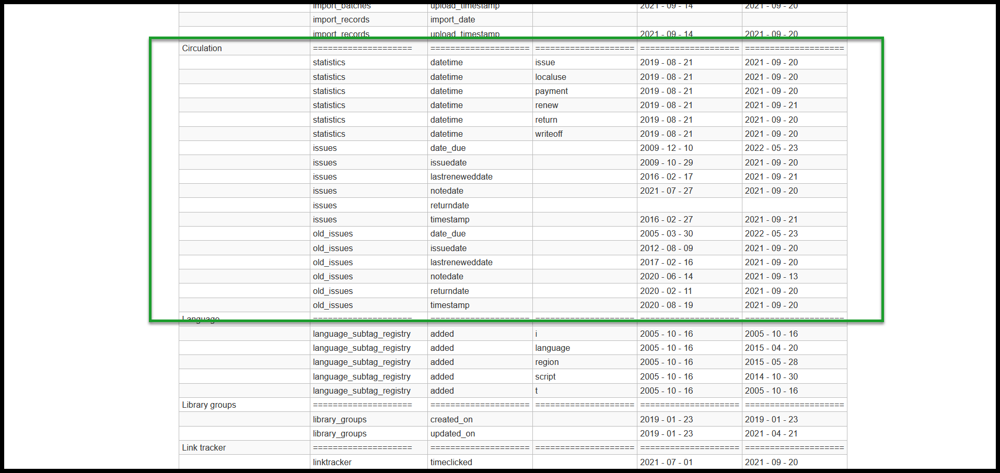

Future of past data
- or -
Is there a report that can show me checkouts by Zip code for the past 5 years?
Strategies for keeping meaningful data while getting rid of unneeded details.
--
These slides availale at http://bit.ly/pastdata2021
George Williams
Next Search Catalog Coordinator
Northeast Kansas Library System
koha-US member and Past President www.koha-us.org
USA - Kansas is in the middle.

I am the Next Search Catalog Coordinator at
Northeast Kansas Library System in Lawrence, KS.
117 NEKLS Libraries in the highlighted area.

NEKLS provides many services to all types of libraries in north east Kansas.
The 14 highlighted counties account for approximately 44% of the population of Kansas.
Next Search Catalog
(used to be called NExpress)

Next Search Catalog is only one of the services NEKLS provides.
52 of our member libraries participate in our shared catalog.
Using Koha since 2008.

Community Koha hosted by ByWater Solutions since 2011.
My life before Kansas
- Originally from Idaho.
- Latah County Library District
- Circulation Manager (2006-2016). - University of Idaho
- TA and Lecturer (2002-2006). - Boise Public Library
- Bookmobile Specialist (1997-2002). - University of Idaho Library
- Student Employee (1996-1997). - +Bus driver, Restaurant manager, Cook, Dishwasher, Sophisticated man about town.
koha-US
Slides
These slides availale at http://hopperdietzel.org
Slides
These slides availale at http://bit.ly/pastdata2021
datum, dati - 2nd declension noun (neuter)
Latin - gift, present | in English it becomes "a given"
| Case |
Singular | Plural |
| Nomnative | datum | data |
| Genitive | dati | datorum |
| Dative |
dato | datis |
| Accusative | datum | data |
| Ablative | dato | datis |
| Vocative | datum | data |
Questions I've received so far this year
1. I have a borrower who wants to know the title of every book they've checked out since 2002. Is there a report I can run to tell me that?
2. I need to know weekly circulation by Item Type, Collection Code, and Shelving Location for the last 5 years. I can find a report for that but I have to enter the start date and end date for each week and it only goes back to 2018. Can you help?
3. I want to know circulation by Zip code since 2011. Can you write a report for that?
Answers I've give to these questions
- No
- No
- No
Complex questions
These questions are pretty common
CRIMINAL MINDS
FBI library patron
CRIMINAL MINDS
FBI reference librarian in charge of answering unrealistic complex questions
There is a burden to saving data forever
Physical files
There is a burden to saving data forever
The cloud
The cloud
The cloud = these guys' computers
Google founders Larry page and Sergey Brin
The cloud = these guys' computers
Dropbox founders Drew Houston and Arash Ferdowsi
The cloud = this guy's computer
Amazon founder Jeff Bezos
The practical and the philosophical
- Practical reason: It takes up physical space on our server
- Philosophical reason: The longer we keep our data, the greater the risk that confidentiality may be breached
Supersize me
Next Search Catalog Statistics
- Total holdings: 402709
- Total items: 1011096
- Total borrowers: 116247
- 2020 circulation: 802267
- 2019 circulation: 1458904
- 2018 circulation: 1529206
Kansas open records laws and libraries
Library records that are considered confidential
- Borrower registration, circulation, or loan records pertaining to identifiable individuals
- Identity of those who donate materials if the donation stipulates anonymity
- Personnel records and performance records (except names, positions, length of service, and salaries)
- Correspondence between the Library and a private individual, including print and electronic formats
- etc.
Law enforcement has contacted us 5 times in the last 6 years asking for confidential data from our system
What to save, what not to save
Fresh data vs expired data
Our retention schedule
- action_logs - timestamp 120 days (recently changed from 60 days)
- deletedbiblio - timestamp 13 months
- deletedbiblio_metadata - timestamp 13 months
- deletedbiblioitems - timestamp 13 months
- deleteditems - timestamp 13 months
- message_queue - time_queued 6 months
- old_issues - timestamp 13 months
- old_reserves - timestamp 13 months
- statistics - datetime 25 months
Most data
- deletedbiblio - timestamp 13 months
- deletedbiblio_metadata - timestamp 13 months
- deletedbiblioitems - timestamp 13 months
- deleteditems - timestamp 13 months
- old_issues - timestamp 13 months
- old_reserves - timestamp 13 months
Major exception: Action logs
- action_logs - timestamp 120 days (recently changed from 60 days)
Two other exceptions
- message_queue - time_queued 6 months
- statistics - datetime 25 months
Statistics table
statistics.datetime
statistics.branch
statistics.value
statistics.type
statistics.other
statistics.itemnumber
statistics.itemtype
statistics.location
statistics.borrowernumber
statistics.ccode
Statistics table
statistics.branch = check-out branch
statistics.location = current shelving location - NOT permanent location
Very basic checkout/renew count at a checkout library
SELECT
statistics.branch,
Count(*) AS COUNT
FROM
statistics
WHERE
(statistics.type = 'issue' OR
statistics.type = 'renew')
GROUP BY
statistics.branch
Very basic checkout/renew count at a checkout library grouped by item type
SELECT
statistics.branch,
statistics.itemtype,
Count(*) AS COUNT
FROM
statistics
WHERE
(statistics.type = 'issue' OR
statistics.type = 'renew')
GROUP BY
statistics.branch,
statistics.itemtype
Very basic check-out and renewal count by checkout/renew branch, item home branch, and item type
SELECT
statistics.branch,
items.homebranch,
statistics.itemtype,
Count(*) AS COUNT
FROM
statistics JOIN
items ON items.itemnumber = statistics.itemnumber
WHERE
(statistics.type = 'issue' OR
statistics.type = 'renew')
GROUP BY
statistics.branch,
items.homebranch,
statistics.itemtype
Report run on October 1, 2021 for September 2021 data
SELECT
statistics.branch,
items.homebranch,
statistics.itemtype,
Count(*) AS COUNT
FROM
statistics JOIN
items ON items.itemnumber = statistics.itemnumber
WHERE
statistics.datetime BETWEEN "2021-09-01" AND "2021-10-01" AND
(statistics.type = 'issue' OR
statistics.type = 'renew')
GROUP BY
statistics.branch,
items.homebranch,
statistics.itemtype
Potentially good result if run on October 1, 2021
Report run on October 1, 2021 for September 2019 data
SELECT
statistics.branch,
items.homebranch,
statistics.itemtype,
Count(*) AS COUNT
FROM
statistics JOIN
items ON items.itemnumber = statistics.itemnumber
WHERE
statistics.datetime BETWEEN "2019-09-01" AND "2019-10-01" AND
(statistics.type = 'issue' OR
statistics.type = 'renew')
GROUP BY
statistics.branch,
items.homebranch,
statistics.itemtype
Data won't be fresh - many items could have been deleted or updated in the intervening 2 years
Statistics table again
statistics.datetime
statistics.branch
statistics.value
statistics.type
statistics.other
statistics.itemnumber
statistics.itemtype
statistics.location
statistics.borrowernumber
statistics.ccode
Circulation by Zipcode for this month
SELECT
statistics.branch,
borrowers.zipcode,
Count(*) AS COUNT
FROM
statistics JOIN
borrowers ON borrowers.borrowernumber = statistics.borrowernumber
WHERE
statistics.datetime IS BETWEEN "2021-09-01" AND "2021-10-01" AND
(statistics.type = 'issue' OR
statistics.type = 'renew')
GROUP BY
statistics.branch,
borrowers.zipcode
Circulation by Zipcode for this month
SELECT
statistics.branch,
borrowers.zipcode,
Count(*) AS COUNT
FROM
statistics JOIN
borrowers ON borrowers.borrowernumber = statistics.borrowernumber
WHERE
statistics.datetime BETWEEN "2019-09-01" AND "2019-10-01" AND
(statistics.type = 'issue' OR
statistics.type = 'renew')
GROUP BY
statistics.branch,
borrowers.zipcode
Deletions
- 2021 Borrowers: 15477
- 2021 Items: 65879
- 2020 Borrowers: 3930
- 2020 Items: 186477
- 2019 Borrowers: 12972
- 2019 Items: 253524
Questions I've received so far this year
Q: I have a borrower who wants to know the title of every book they've checked out since 2002. Is there a report I can run to tell me that?
A. No, because a) we only keep old_issues for the past 13 months: and b) we've only been using Koha since 2008 and it would be impossible to lookup data from before then even if we did keep it: and c) even if we could go all the way back to 2008, your library didn't join Next until 2011 and before that you wern't automated - all of the pre-2011 data would have to be on paper files created at your library.
Questions I've received so far this year
Q: I need to know weekly circulation by Item Type, Collection Code, and Shelving Location for the last 5 years. I can find a report for that but I have to enter the start date and end date for each week and it only goes back to 2018. Can you help?
A. No. We only keep statistics data for the last 25 months, but we started saving monthly circulation counts by library, location, and collection code in 2019 and we started saving monthly circulation counts by library, location, and item type in 2020, so I can show you to those spreadsheets.
Questions I've received so far this year
Q: I want to know circulation by Zip code since 2011. Can you write a report for that?
A. No. Nobody has ever asked for this statistic before. I can write a report that will get you good data for last month, but data from more than a month ago will not be as reliable and it can only go back for the previous 25 months. But since you're interested in this and since another library is interested in this, I'll start collecting this data system wide starting in July of 2021.
How to decide what to report on
- What do your end of the month and end of the year reports look like
- What kind of collection development data do would be useful for collection development
- What kind of demographic information do you need for strategic planning
- What kind of data do you need for intra-consortial planning
When to collect the data and where to store
- For us, monthly works well
- I schedule on the first of each month
- We currently store on Google Drive, but we're switching to Github in January
Main set of reports
Reports for circulation by different categories
- Monthly 210 Circulation statistics by item type
- Monthly 220 Circulation statistics by collection code
- Monthly 230 Circulation by borrower's zipcode
- Monthly 240 Hourly statistics
- *Circulation by borrower category coming in 2022*
Reports for Borrower usage, item counts, and requests
Reports for local item checkout, net lending/borrowing, and borrower counts
I use Excel to make the reports presentable and saveable
12 Excel workbooks with a variety of annual statistics
Current Next Search Catalog main statistics
Current Next Search Catalog detailed circulation statistics
Current Next Search Catalog detailed borrower, holdings, and item statistics
Current Next Search Catalog detailed request and resource sharing statistics
A report you can use
This report is 2362 lines long - but it runs in about 30-40 seconds.
Creating it wasn't as hard as you'd think.
Date-time report
screenshot of report
Action logs
Screenshot zoom of action logs
Biblios
Screenshot zoom of biblios
Statistics and circulation
Screenshot zoom of statistics
Thanks for listening
Thanks for coming to the 2021 koha-US conference!
These slides availale at http://hopperdietzel.org
Credits
- Star Wars intro created with Star Wars Crawl Creator at play.starwars.com
- Intro music: "Battle Ready" by Bryan Teoh (https://freepd.com/epic.php)
Video
- A videorecording of this presentation is availale at: (https://youtu.be/yHwOEE78xak)
Contact information
Send
me an e-mail
Find me on Twitter
Find me on Facebook
Next Search Catalog Coordinator
Northeast Kansas Library System
Personal website
-
Find me on Twitter
Find me on Facebook
Next Search Catalog Coordinator
Northeast Kansas Library System
Personal website
-
These slides availale at http://bit.ly/pastdata2021